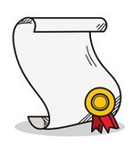

Later Career
In 1999 Tim Berners-Lee became the first holder of the 3COM Founder’s chair and wrote a book along with Mark Fischetti called “Weaving the Web: The Original Design and Ultimate Destiny of The World Wide Web.” He received many orders including OBE, knighthood, and Order of Merit–-becoming one of the only 24 living members entitled to the honor. He was knighted in 2004 “for services to the global development of the Internet.” He also in 2004 was named a professor in the Computer Science Department at the University of Southampton, UK. He became the co-Director of the Web Science Trust, launched in 2006 at the Web Science Research Initiative, to help create the first multidisciplinary research body to examine the World Wide Web and offer practical solutions needed to help guide and further its design.
In 2008 he was the 3COM Founders Professor of engineering in the School of Engineering, along with a joint appointment in the Department of Electrical Engineering and Computer Science at CSAIL, where he heads the Decentralized Information Group (DIG). He also in 2008 he founded and became the director of the World Wide Web Foundation— a non-profit organization devoted to achieving a world where all people can use the Web to communicate, collaborate, and innovate freely. The World Wide Web Foundation funds and coordinates efforts to further the potential of the Web to benefit humanity.
In 2009 it was announced by the British Prime Minister, Gordon Brown that Tim Berners-Lee and Nigel Shadbolt would be working with the UK government to make data more publicly available to people that needed it on the website “data.gov.uk”. In 2011 he was named to the Board of Trustees of the Ford Foundation, a globally oriented private foundation with the mission of advancing human welfare. In 2012 he was recognized for his invention of the World Wide Web in the 2012 opening Olympic ceremony and joined the Computer Science Department at the University of Oxford as a professor in 2016.
Awards
Over Tim Berners-Lee's many years of accomplishments he has racked up quite a few awards.
Below in the table are only a few of the many he has earned.
| Award | Year Awarded | Awarded For | Awarded By |
|---|---|---|---|
| Young Innovator of the Year | 1995 | "Honored for his vast technical insight, Berners-Lee created the World Wide Web (W3), an Internet-based hypermedia initiative for global information sharing, while working at CERN." | Kilby Foundation |
| Software System Award | 1995 | "for developing a software system that has had a lasting influence, reflected in contributions to concepts, in commercial acceptance, or both". | Association for Computing Machinery (ACM) |
| Fellow Award | 2003 | "his seminal contributions to the development of the World Wide Web" | Computer History Museum |
| Millennium Technology Prize | 2004 | Invention of the World Wide Web | Finnish Technology Award Foundation |
| President's Medal | 2006 | "meritorious services in various fields of endeavor which were of benefit to physics in general and the Institute in particular" | Institute of Physics |
| Lovelace Medal | 2007 | "contribution to the development of IT." | British Computer Society |
| IEEE/RSE Wolfson James Clerk Maxwell Award | 2008 | "conceiving and further developing the World Wide Web." | IEEE and Royal Society of Edinburgh |
| Mikhail Gorbachev award | 2011 | "contribution to the development of global civilization" | Mikhail Gorbachev |
| Queen Elizabeth Prize for Engineering | 2013 | "ground-breaking innovation in engineering that has been of global benefit to humanity." | Queen Elizabeth Prize for Engineering Foundation |
| ACM A.M. Turning Prize also called "Nobel Prize of Computing" | 2017 | Inventing the World Wide Web, the first Web browser, and the fundamental protocols and algorithms allowing the Web to grow. | Association for Computing Machinery (ACM |
Top 10 Quotes by Tim Berners-Lee
- "We need diversity of thought in the world to face the new challenges." — Tim Berners-Lee
- "Data is a precious thing and will last longer than the systems themselves." — Tim Berners-Lee
- "The Web as I envisaged it, we have not seen it yet. The future is stil so much bigger than the past." — Tim Berners-Lee
- "You affect the world by what you browse." — Tim Berners-Lee
- "The original idea of the web was that it should be a collaborative space where you can communicate through sharing information."— Tim Berners-Lee
- "There was a time when people felt the internet was another world, but now people realize it's a tool that we use in this world." — Tim Berners-Lee
- "The Domain Name Server (DNS) is the Achilles heel of the Web. The important thing is that it's managed responsibly." — Tim Berners-Lee
- "The Semantic Web is not a separate Web but an extension of the current one, in which information is given well-defined meaning, better enabling computers and people to work in cooperation." — Tim Berners-Lee
- "Intellectual property is an important legal and cultural issue. Society as a whole has complex issues to face here: private ownership vs. open source, and so on." — Tim Berners-Lee
- "We can't blame the technology when we make mistakes." - Tim Berners-Lee
Tim Berners-Lee Image Gallery
Web Consortium (W3C).
Foundation.